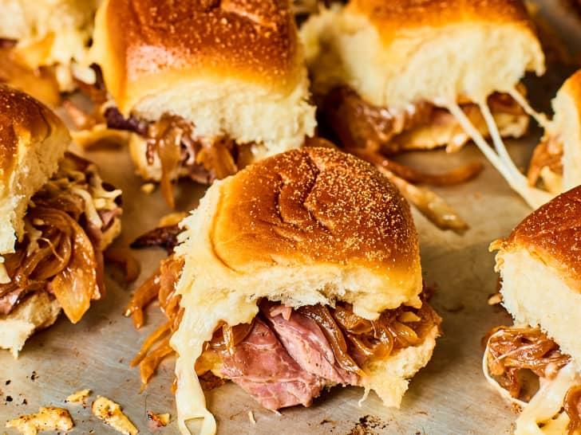

Hawaiian Roll Party Sliders

If you’ve never made Hawaiian roll sliders, you’ll quickly fall in love with the easy (and fun!) technique. You’ll slice the entire pack of rolls in half horizontally (keeping each half intact and connected), pile the onions, roast beef, and cheese onto the bottom half, and then sandwich the top layer of rolls over top. Transfer to the oven and bake until the rolls are toasty and the cheese is melted.
Ingredients:
- 2 tablespoon unsalted butter
- 2 large sweet onions
- 2 teaspoon kosher salt
- 2 teaspoon Worcesteshire sauce
- 12 thin slices deli roast beef
- 8 ounces cheese
- 1 teaspoon garlic powder
- 1 teaspoon onion powder
- 1 tablespoon finely chopped freesh parsley leaves
Cooking Instructions:
-
Heat 1 tablespoon of the butter in a large skillet over medium until melted. Add the onions and salt and cook, stirring every 5 to 10 minutes and scraping any browned bits from the bottom of the pan, until soft and deeply browned, about 40 minutes total. Stir in the Worcestershire sauce, again scraping the bottom of the pan. Remove the pan from the heat. Meanwhile, arrange a rack in the middle of the oven and heat to 350°F.
-
Melt the remaining tablespoon of butter; set aside.
-
Cut the entire pack of rolls in half horizontally, keeping each half intact and connected. Place the bottom half of the rolls on a baking sheet. Top with the roast beef (about 1 slice per roll). Spread the onions in an even layer over top, then sprinkle evenly with the cheese. Place the top layer of rolls over the cheese. Brush the top of the rolls with the melted butter. Sprinkle with the garlic powder and onion powder.
-
Cover the baking sheet with aluminum foil and bake for 15 minutes. Uncover and bake until the cheese is melted and the rolls are lightly browned, 5 to 7 minutes more. Let cool for 5 minutes before serving. Sprinkle with the parsley, if desired.